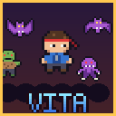

The games
Vita Bowl
A pick-up-and-play football game in the spirit of Retro Bowl, rebuilt around the Vita's buttons and sticks.
Details →
VibecodedSurvivor.io Vita
A Survivor.io-style horde game that runs entirely offline on your Vita. Hold out, level up, take down bosses.
Details & download → Vibecoded
VibecodedAC-130 Spectre
Orbit the battlefield in an AC-130, watch the thermal feed, and bring down buildings with heavy artillery.
Details & download → Vibecoded
VibecodedStairway to Heaven
Survive endless rounds of zombies while climbing a white stairway in the sky, one floor at a time.
Details & download →Install on your Vita
You'll need a Vita that can run homebrew (HENkaku/Ensō or similar) and VitaShell.
- Download the game's
.vpkfile. - Copy it to your Vita (USB or FTP through VitaShell).
- Open it in VitaShell and press X to install.
- Launch it from the LiveArea like any other app.
About this project
"Vibecoding" means building software by describing what you want in plain language and letting an AI write the code. Every game on this page was made that way, from the first menu screen to the last bug fix.
These are hobby projects, shared for fun. They may crash, glitch or change without notice, and they're provided as-is.